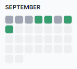
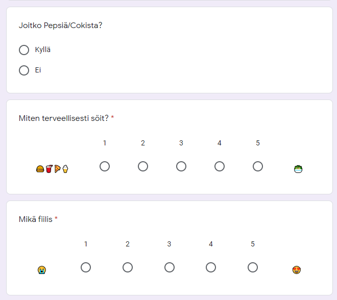
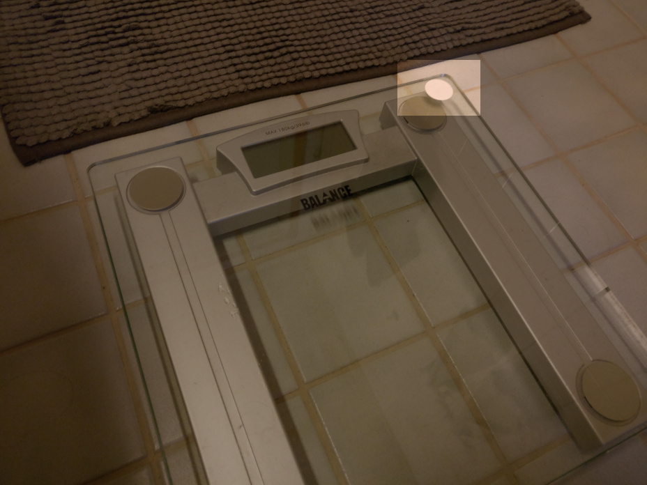
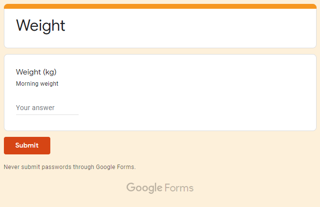

Quantified self: overview & quick links
Lately I’ve been fascinated with the concept of “quantified self”.

What does it mean?
The quantified self refers both to the cultural phenomenon of self-tracking with technology and to a community of users and makers of self-tracking tools who share an interest in “self-knowledge through numbers.”
(source: Wikipedia article on “Quantified self”)
tl;dr: record numbers (= quantify) about your own life, so you can learn about yourself and track trends over time.
Which data to record?
Metrics categories one could track (and graph) about oneself (examples - I only collect a small percentage of these possibilities):
- Health, mental
- Happiness level
- Stress level (maybe has overlap with work stress level, unless it’s easy for you to separate them?)
- (social life) Did I connect with partner today? Close friends? Family? Co-worker etc..
- (social life) Did I feel lonely?
- Positive & negative thoughts reflection (free text, so not technically about quantifying, but this has been helpful to me - more on this later)
- Health, physical
- Sleep
- Weight
- Exercise habits (was I at gym today? Did I jog today? etc.)
- Perceived physical health level
- Food/drinks, alcohol consumption
- If one has major physical ilnesses, maybe separate metrics on those (e.g. pain level 0-5 for migraine)
- Work
- Time
- Type (log commute time to work separately?)
- Location
- Keystroke count on a computer
- Productivity level
- Stress level
- Media consumption
- Books, podcasts etc., TV, movies, music you listen to, games…
- Twitter, Facebook, Instagram, YouTube etc. use in minutes per day (screen time)
- One could sub-categorize above based on self-development/productiveness/pure entertainment
- Travel
- Where to? Duration?
- Did I take a bus? A train? Airplane?
- Communication
- Instant messenger/social media metrics (e.g. Whatsapp messages sent/received per day)
- Emails sent/received, phone calls made/taken per day etc.
- Financial data
- (There’s probably much more I didn’t think of right now)
Why?
Learn about yourself, improve yourself, set & track goals (if you’re brave, I haven’t done this yet - you don’t have to do everything!). Become happier.
Concrete example from my life on how self reflection can affect happiness: I’ve been doing self reflection for close to two years, keeping a short “diary” at end of each day to think what was positive and what was negative about each day (in addition to capturing quantified metrics). During one specific day I felt like I wasn’t getting anything done and that made my unhappy. When filling the diary, I listed in the positive things the things I got done, and I realized I actually got a lot more of things done than what I gave credit to myself for.
Realizing the above made me instantly happier, because I understood I was just too hard on myself, and it actually surprised me how my feeling of not getting anything done was so disconnected from reality. I just had too much on my plate, and there’s not much I could’ve done about it. Upon learning from this, in addition to it improving my happiness for that given day, it might even help me in the future by being aware that feelings might sometimes be very inaccurate, and reflecting further might be very helpful in adding clarity. Clarity of the mind might decrease general anxiousness. Specific anxiousness is easier to address.
How?
Some people log things in a spreadsheet of some kind. Some people use dedicated apps (I guess habit tracking apps are more widespread than those targeted exactly at QS purposes).
About two years ago I was keen on starting to capture data ASAP (as not to lose data) as simply as possible because I didn’t have time to worry about the insights part yet.
So I took the very easy route of setting up a Google Form to ask me questions each day (the answers are saved to a spreadsheet):

I have a daily calendar reminder before going to sleep which contains the URL to the form so it’s a very easy system to use.
I also have a scheduled recurring task in my todo app to remind me to log my weight. My scale has a NFC sticker ..:

.. scanning of which opens a Google Form to enter the measurement:

There’s actually something to be said about smart scales, which probably require software updates, are a security liability, require troubleshooting and changing batteries more often. Why not stick a NFC sticker on an existing scale - it’s not many seconds to enter the reading with your phone. :)
As you can see, many of my approaches are low-tech and don’t require much effort to start capturing data.
Is recording this data time consuming / stressful?
That depends on type and amount of data that you want to capture.
There are things you can capture entirely automatically:
- Minutes of YouTube watched per day
- Emails sent/received per day etc.
- Sleep tracking with an activity band
There are things you can capture semi-automatically:
- Start workout tracking app when you start running, stop when you’re done. This gives you lots of data like running distance, speed, heart rate (if you have a sensor) etc for the workout for not much work to capture it.
And there are things that are very manual/laborious to capture:
- Foods/drinks consumed (even more if you want to count calories)
- Physical books read (even more if you want to count minutes per day and/or pages per day read)
So what I’m trying to say is that it comes down to your preferences: how much data you want, how much effort are you comfortable on spending to capture it.
And most of all, don’t capture data just for the sake of data (at least data that takes effort to capture), unless you have a use for it:
We don’t know how to measure what we care about, so we care about what we measure.
- Richard Tapia, mathematician
(I’m a data hoarder, so I probably fail at this a lot.)
Quick links
- My Quantified Self Setup by Julian Lehr
- Really cool and comprehensive categorization of data that he’s recording
- The Personal Analytics of My Life
by Stephen Wolfram
- He has email and keystroke graphs where his workdays are clearly visible as data over a decade in a single graph.
- If his writing intrigued you, see also his another writeup on my personal infrastructure for productivity, productivity tips, how he organizes his files in his filesystem
- Awesome Quantified Self
- Carefully curated list of awesome Quantified Self resources.
- (See also meta series on awesome lists if you’re not deep enough in internet rabbit holes.)
- r/QuantifiedSelf - QS subreddit
- What Chris Dancy Learned From 700+ Sensors, Devices & Apps (video)
- What data on myself I collect and why? by karlicoss
- Dogsheep
- Export data from services like Google, Twitter, Foursquare etc. for your own use.
Additional thoughts
Organize tracking categories around Maslow’s hierarchy of needs?
If I was the type of person to want to publish my personal metrics, I’d already have the perfect domain for it: https://joonas.fi/api/metrics/bio/heart-rate etc :D
Commit data hashes (with privacy, of course) into a publicly verifiable blockchain, so you can cryptographically prove from your history that you claimed on a given day that this metric had this value. Wouldn’t it be interesting in a court case to cryptographically prove that your GPS tracker claimed that this is where you were at that date? Of course you can only prove that you claimed as such on that day (you could’ve faked those GPS tracks on that day), but you can prove that this isn’t a claim you came up in the future that happens to suit you because you learned that you have a court case coming up.

Thanks for reading! 😍
If you like my writing, consider following me on Twitter.
Stay updated on my blog posts & projects - sign up for
my newsletter. 🚀
No spam, unsubscribe any time.
RSS also available.